In 30 seconds
- Tested the way an operator would need. Four fresh test sets in 18 new US areas: the areas, the pass rule and the success criteria were committed and timestamped on GitHub before any data was fetched, then each was scored once. Results are reported whichever way they came out.
- A learned detector was not good enough, and the gate was fixed. A Sentinel-1 ResNet-50 classifier passed the promotion gate, but on fresh water it produced 59% more false alarms than classical CFAR set to find as many ships. It was not promoted, and the gate gained a rule that would catch it.
- A false-alarm budget does not travel. A CFAR threshold set to give 10 false alarms per 1,000 km² on 129 passes gave 23 in five new areas. Most of the excess sits on returns that recur from pass to pass: in Mobile Bay, 87% of false alarms fell on 32 recurring spots, only 4 of them on the federal platform list.
- The fix held up. A map of recurring unexplained returns, built from each region's own first six months, cut false alarms on the dark list by 34% beyond the federal platform list in the next six months of five new areas, and raised Pd at 5 false alarms per 1,000 km² by +0.05 (+0.03 to +0.09), without hiding any AIS-tracked ship. The pre-registered scoring, which left that list out by mistake, gave 41% and +0.08.
- Hiding next to a structure. Masking recurring returns has a cost: in Mobile Bay 7 of 37 AIS ships sat at a map spot, because vessels moor at some of them. Spots with an AIS ship beside them are now left unmasked. A flag for structures whose return changes caught 60% of vessels injected beside them in development. In a fourth pre-registered test on five structure-rich new areas, the map with that rule was an improvement (false alarms cut 65%, 2 of 115 AIS vessels at a spot); the flag does not transfer: it caught 66% of injected vessels but added 1.9 false alarms per 1,000 km², over its bar of 1.0, so it stays out of production.
- On Canadian water. Over the Grand Banks oil fields, with no AIS and no list of structures, the same map found 3 of the regulator's 4 production installations and the new West White Rose platform, with no false spot. The fourth, SeaRose, appears on every pass 2.0 km from its listed position, and swings too far for the map's 100 m rule.
- Reproducible. Every number on this page is read from a results file written by a script in the repository; the code has 127 tests, and every detector version and gate decision is in an MLflow registry.
Latest live pass
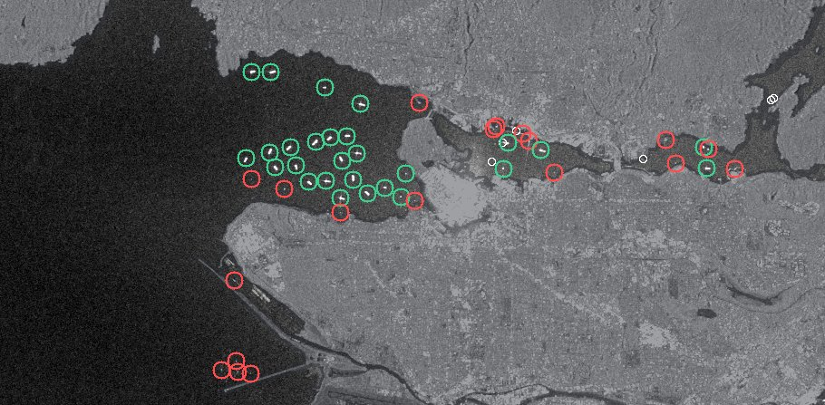
A target with no AIS match is not necessarily a vessel hiding: it can be a boat too small to need AIS, a buoy, a structure missing from the map, or a false alarm. On the 2024 passes, where every result was checked, the same setting gave 13 unmatched targets per 1,000 km²; here it is 77, in a busy harbour. St. John's harbour is next: Mon 26 Oct 07:11 NDT, the first St. John's pass with AIS recorded around it.
What runs
- PlanPredict Sentinel-1 overpasses of each harbour from the 12-day orbit repeat.
- Record AISRecord live AIS from 75 min before to 75 min after each pass (systemd timer).
- Wait for the scenePoll the Planetary Computer STAC catalogue until the scene is published.
- IngestRead only the harbour window of the terrain-corrected Sentinel-1 scene (10 m).
- Mask landOpen water from Overture/OSM, minus piers and bridges, and a coastal buffer.
- DetectTwo-parameter CFAR on cross-pol backscatter; fragments within 100 m merged.
- CorrelateAIS interpolated to the overpass; match region stretched along the track by each ship's expected azimuth shift.
- CharacteriseLength and axis from the blob, polarisation ratio, platforms flagged (BOEM).
- ProductsGeoJSON, KML, image chips, alerts for dark targets in protected areas.
- ReviewAnalyst console: accept or reject each target; decisions saved as labels.
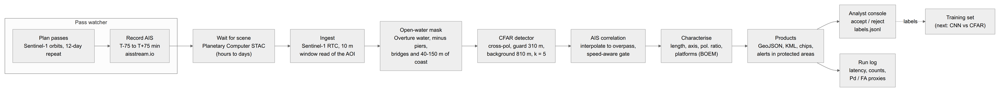
Validation: 2024 Sentinel-1 passes with NOAA AIS
Twelve passes from 2024 over three busy US areas, four per area, spread over the year and over ascending and descending orbits. The truth is NOAA MarineCadastre AIS, interpolated to each overpass. Only vessels on open water at least 150 m from the mapped coast are scored. The radar detector is the two-parameter CFAR baseline that later models must beat.
| Area | Passes | AIS ships | Open water km² | Pd at 1 FA | Pd at 5 FA | Pd at 10 FA | Pd at k = 5 | Pd by chance at k = 5 | FA per 1,000 km² at k = 5 | Unmatched (dark candidates) | At platforms (excluded) |
|---|---|---|---|---|---|---|---|---|---|---|---|
| All areas | 12 | 226 | 10,469 | 0.22 | 0.63 | 0.77 | 0.81 | 0.04 | 13.1 | 137 | 120 |
| Puget Sound | 4 | 92 | 1,412 | 0.25 | 0.45 | 0.55 | 0.72 | 0.03 | 22.7 | 32 | 0 |
| LA–Long Beach | 4 | 109 | 1,125 | 0.25 | 0.44 | 0.64 | 0.84 | 0.05 | 50.7 | 57 | 0 |
| Gulf of Mexico | 4 | 25 | 7,933 | 0.36 | 0.92 | 0.96 | 0.96 | 0.01 | 6.1 | 48 | 120 |
Pd: share of AIS ships on open water that a detection matched. FA: detections that no AIS ship accounts for, per 1,000 km² of open water. Those include vessels without AIS, so the rate is an upper bound on false alarms. Detections within 150 m of a standing BOEM platform are counted separately and not scored.
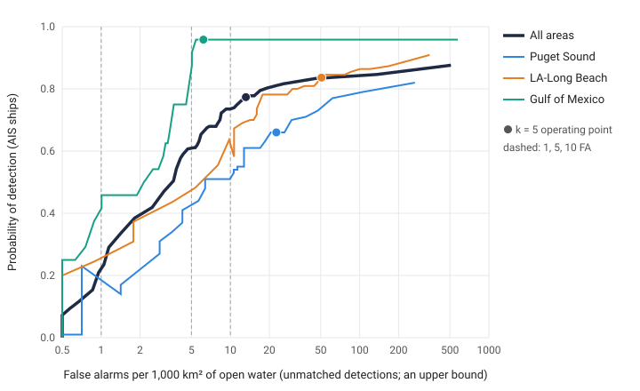
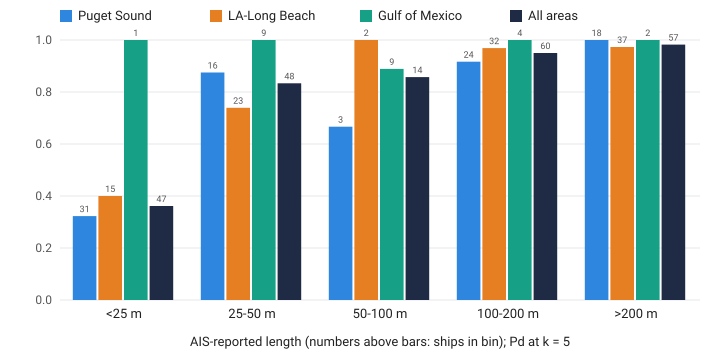
Pd by length
| Area | <25 m | 25-50 m | 50-100 m | 100-200 m | >200 m |
|---|---|---|---|---|---|
| All areas | 0.36 (17/47) | 0.83 (40/48) | 0.86 (12/14) | 0.95 (57/60) | 0.98 (56/57) |
| Puget Sound | 0.32 (10/31) | 0.88 (14/16) | 0.67 (2/3) | 0.92 (22/24) | 1.00 (18/18) |
| LA–Long Beach | 0.40 (6/15) | 0.74 (17/23) | 1.00 (2/2) | 0.97 (31/32) | 0.97 (36/37) |
| Gulf of Mexico | 1.00 (1/1) | 1.00 (9/9) | 0.89 (8/9) | 1.00 (4/4) | 1.00 (2/2) |
Position error
A moving ship appears displaced along the satellite track by about 115 s times its speed toward the radar. So stationary and moving ships are reported separately, and a detection matches an AIS ship only within 300 m of a region stretched along the track by that shift, not in a wide circle. Random detections on the same water would reach Pd 0.04 (the Pd by chance column).
| Area | Stationary ships | Error median / p90 (m) | Moving ships | Error median / p90 (m) |
|---|---|---|---|---|
| All areas | 111 | 42 / 139 | 71 | 152 / 634 |
| Puget Sound | 34 | 57 / 178 | 32 | 172 / 713 |
| LA–Long Beach | 68 | 32 / 98 | 24 | 198 / 409 |
| Gulf of Mexico | 9 | 70 / 150 | 15 | 96 / 997 |
What the coastal buffer changes
With Harbour Twin's original 40 m coastal buffer, most unmatched targets in Puget Sound were on the shoreline: private docks and shore returns that the map does not show (350 unmatched there, against 32 at 150 m). Pooled, the false-alarm rate at k = 5 falls from 48.7 to 13.1 per 1,000 km², and Pd at 5 FA rises from 0.54 to 0.63. The cost is that ships within 150 m of the coast are no longer tested (272 AIS ships scored at 40 m, 226 at 150 m). A detector for berths and marinas needs a better land and structure mask, not a bigger buffer.
The 150 m was picked after looking at these 12 passes, so the figures above are not independent of that choice. As a check, the buffer was chosen again on the 23 separate 2024 training passes alone (best Pd at 5 FA among 40, 75, 100, 150, 200, 300 m) and scored once on the 12 test passes. That picks 300 m, which on the test passes gives Pd at 5 FA 0.66 and 10.6 false alarms per 1,000 km² (150 m: 0.63 and 13.1), but scores only 201 of the 226 ships. So choosing 150 m on the test passes did not flatter the figures above. It also shows that Pd at a fixed false-alarm rate cannot choose the buffer on its own: Pd keeps rising as the buffer widens, partly because the ships near the coast, the hardest ones, leave the test. That is why the promotion gate below also requires nearly all ships to stay scored, and rejects 300 m.
The 12 passes
| Area | Sensing time | Orbit | AIS ships | Detections | Matched | Unmatched | At platforms |
|---|---|---|---|---|---|---|---|
| Puget Sound | 2024-02-13 02:02 UTC | ascending | 22 | 25 | 20 | 5 | 0 |
| Puget Sound | 2024-05-19 02:02 UTC | ascending | 23 | 29 | 20 | 9 | 0 |
| Puget Sound | 2024-07-18 02:02 UTC | ascending | 35 | 28 | 18 | 10 | 0 |
| Puget Sound | 2024-10-10 02:02 UTC | ascending | 12 | 16 | 8 | 8 | 0 |
| LA–Long Beach | 2024-01-03 13:53 UTC | descending | 19 | 32 | 18 | 14 | 0 |
| LA–Long Beach | 2024-04-20 01:50 UTC | ascending | 29 | 38 | 25 | 13 | 0 |
| LA–Long Beach | 2024-07-18 01:58 UTC | ascending | 34 | 40 | 28 | 12 | 0 |
| LA–Long Beach | 2024-10-10 01:58 UTC | ascending | 27 | 39 | 21 | 18 | 0 |
| Gulf of Mexico | 2024-03-22 00:02 UTC | ascending | 6 | 10 | 6 | 4 | 30 |
| Gulf of Mexico | 2024-07-08 00:02 UTC | ascending | 5 | 14 | 5 | 9 | 30 |
| Gulf of Mexico | 2024-08-01 00:02 UTC | ascending | 6 | 13 | 5 | 8 | 30 |
| Gulf of Mexico | 2024-10-12 00:02 UTC | ascending | 8 | 35 | 8 | 27 | 30 |
Locked test: three areas never used for any choice
The 12 test passes above helped choose the coastal buffer, so they are not a clean held-out set. A second set was therefore fixed before any of its data was fetched: Massachusetts Bay: Boston approaches, Chesapeake Bay entrance and Cape Henry approaches, New York Lower Bay and Ambrose approaches, the first Sentinel-1 scene each month of 2024 that covers the area (36 passes, 284 AIS ships, 20,027 km² of open water). The scene list and the detector settings were committed first; the detector is the production CFAR, unchanged. Intervals are 95% bootstraps that resample whole passes.
| KPI | Test (12 passes) | Locked (36 passes) |
|---|---|---|
| Pd at k = 5 | 0.81 (0.70–0.89) | 0.69 (0.62–0.77) |
| Pd, ships ≥ 25 m | 0.92 (0.90–0.95) | 0.90 (0.85–0.95) |
| Pd, ships ≥ 50 m | 0.95 (0.91–0.98) | 0.94 (0.89–0.99) |
| Pd at 5 false alarms per 1,000 km² | 0.63 (0.46–0.77) | 0.64 (0.57–0.73) |
| False alarms per 1,000 km² (upper bound) | 13.1 (7.6–25.9) | 13.2 (10.6–16.3) |
| CEP90, stationary ships (m) | 139 (98–183) | 63 (39–148) |
| CEP90, moving ships (m) | 634 (369–1203) | 437 (380–547) |
| AIS positions inside the 90% ellipse | 0.88 (0.80–0.95) | 0.90 (0.87–0.94) |
| Length mean absolute error (m) | 33 (28–41) | 50 (41–60) |
| Hull axis error, median (°) | 4 (3–6) | 11 (7–17) |
Large ships hold up on new water: Pd for ships of 50 m and more is 0.94 on the locked set against 0.95 on the test set, at the same false-alarm rate. Overall Pd is lower (0.69) because more of its AIS ships are boats under 25 m (about 28% against 21%), and fewer of those are found (about 0.20 against 0.36). Length is the weakest KPI: blobs run long (bias 34 m on the locked set), which a learned length estimator addresses (second study below).
Position uncertainty. Every detection now carries a 90% ellipse aligned with the satellite track, 473 m along and 138 m across, fitted on 339 matched ships in the training passes. The long axis allows for the azimuth shift of a moving ship (equivalent to 8 kn toward the radar). On passes it was not fitted on, it contains 90% of AIS positions on the locked set.
Scored twice, same detector. The first scoring of the locked set exposed a fault in the truth, not the detector: AIS had been extracted only inside each area's box, so a ship that had just left the box stayed in the truth at its last fix and counted as a miss. AIS is now extracted 0.1° beyond the box; the truth was rebuilt for every set and every result re-run, with no detector setting changed. The first scoring gave Pd 0.58 at k = 5 on the locked set (342 ships, including the stale ones); it is kept alongside this one.
How many unmatched targets are vessels? A stratified random sample of 128 of the 402 unmatched targets was labelled from the radar chips alone, without AIS, by Claude, an AI model rather than a trained analyst. Of those judged either way, about 64% look like vessels (55%–73%); 47 were too small or faint to call, and counting all of those either way puts the share between 38% and 91%. So the false-alarm rate likely includes many real vessels without AIS. A trained analyst's review would firm this up.
Truth is AIS: vessels without it count as false alarms, so the false-alarm rate is an upper bound. Breakdowns by area, wind, wave height and incidence angle (nearest NOAA buoy within 60 km) are in the repository's KPI report. The hull axis has a 180° ambiguity: the radar gives orientation, not direction of travel.
A learned detector against CFAR
A two-stage detector: CFAR at a low threshold proposes candidates, and a small CNN trained from scratch (no pretrained weights) scores each one from a 480 m chip of cross-pol, co-pol and the water mask. It was trained on 20 other 2024 passes over the same areas, each at least a month from any test pass, with AIS matches as labels (324 ships among 9,264 candidates). Model choice and the operating threshold used 3 further held-out passes; the 12 test passes played no part in training, model choice or the threshold, and are scored exactly like CFAR.
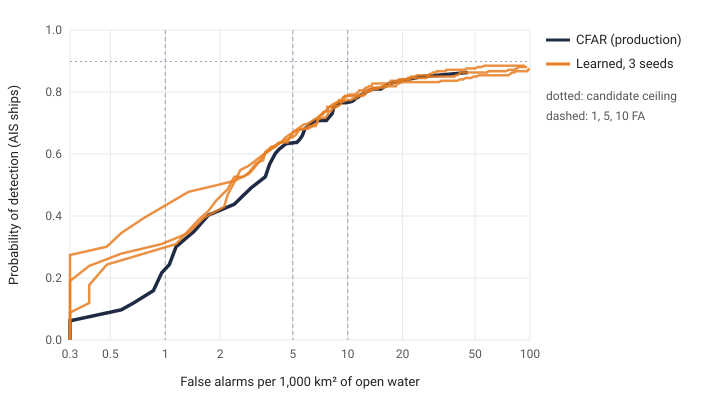
| Pd at | CFAR | Learned (3 seeds) |
|---|---|---|
| 1 FA per 1,000 km² | 0.22 | 0.32 ± 0.08 |
| 5 FA | 0.63 | 0.66 ± 0.01 |
| 10 FA | 0.77 | 0.78 ± 0.01 |
Where false alarms are expensive, the learned detector finds about 50% more ships than CFAR on average (Pd 0.32 ± 0.08 against 0.22 at 1 FA), though the margin varies a lot between training seeds. At looser budgets the two are level, and both are capped by the candidates. At production's own false-alarm rate (13.1 per 1,000 km²) they find the same share of ships (0.81 ± 0.01 against 0.81), and the same share of boats under 25 m (0.37 ± 0.03 against 0.36): no gain on small craft. Through the promotion gate it was rejected: its operating threshold, set on the held-out passes to match production CFAR's false-alarm rate there, gave 15.8 false alarms per 1,000 km² on the test passes against production's 13.1. CFAR stays in production; the learned model is registered as version 5 for the next round. The labels are AIS, so vessels without AIS count as false alarms in training as in scoring; 324 positive examples is a small training set.
A second learned detector, and the pre-registered test it failed
Round two keeps the two-stage design but changes the network and its labels. CFAR proposes candidates at k = 4; a ResNet-50 pre-trained on Sentinel-1 (SSL4EO-S12 SoftCon), fine-tuned on co-pol and cross-pol chips, decides ship or not; five seeds are averaged (registry version 6). It was trained on 14 and tuned on 8 development passes from 2024 in three other areas (San Francisco Bay, New York–New Jersey, Hampton Roads), split by date.
What CFAR's false alarms are (294 on the development passes, sorted by rule and checked on chips): about 40% are bright compact targets without AIS, probably vessels; 27% recur on training passes (fixed objects); 19% are shore returns; 10% weak clutter; ambiguities about 1%. The classifier learns AIS-matched ships against the recurring, shore, clutter and ambiguity candidates; the probable vessels without AIS are left out. These are pseudo-labels: a recurring return can be a boat on a regular mooring.
Development comparison. On the 8 development validation passes, at its frozen threshold, it finds 0.72 of the ships at 10.8 false alarms per 1,000 km², against 0.63 for production CFAR at its best threshold under 13 and 0.64 for a dual-polarisation YOLO trained on Danish AIS (paired differences +0.095, interval +0.032 to +0.171; +0.079, +0.017 to +0.153). The threshold was chosen on the same passes, so these intervals describe, rather than test.
| v6, test | CFAR, test | v6, locked | CFAR, locked | |
|---|---|---|---|---|
| Pd at 1 / 5 / 10 FA per 1,000 km² | 0.43/0.71/0.77 | 0.22/0.63/0.77 | 0.56/0.78/0.82 | 0.62/0.78/0.79 |
| Pd at the operating point | 0.76 | 0.81 | 0.79 | 0.79 |
| False alarms per 1,000 km² there | 8.1 | 13.1 | 5.8 | 9.5 |
| Pd, boats under 25 m | 0.28 | 0.36 | 0.28 | 0.24 |
Test passes. It passes the promotion gate, including the equal-recall rule added after the fresh test below (8.1 against 9.2 false alarms per 1,000 km²). Locked passes. Both detectors find 88 of 112 ships. Against production k = 5, v6 has 38% fewer false alarms (pass bootstrap 13% to 61%), but all of it comes from Massachusetts Bay, and against CFAR re-thresholded to find the same ships the cut is only 15% (-18% to 46%). On the locked passes, v6 shows no demonstrated advantage over CFAR set to the same recall.
| Locked area | v6 ships / false alarms | CFAR k = 5 | CFAR at equal recall (k) | Exposure |
|---|---|---|---|---|
| Massachusetts Bay | 39 / 22 | 40 / 77 | 6.75: 39 / 16 | unseen water |
| Chesapeake entrance | 49 / 65 | 48 / 64 | 4.75: 49 / 81 | shares about 22 km² with a development area |
| Both | 88 / 87 | 88 / 141 | 5.25: 88 / 102 |
A pre-registered fresh test. To settle it, three new areas (Delaware Bay entrance, Charleston approaches, Columbia River entrance), the pass rule and three endpoints were committed, and both detectors frozen by fingerprint, before any of their data was fetched; the 36 passes were then scored once.
| Fresh test, 36 passes, 105 ships | v6 | CFAR |
|---|---|---|
| Pd at 1 / 5 / 10 FA per 1,000 km² | 0.67 / 0.76 / 0.79 | 0.68 / 0.78 / 0.80 |
| At the operating point: Pd, FA per 1,000 km² | 0.78, 7.7 | 0.81, 17.1 (k = 5) |
| False alarms at equal recall | 135 | 85 (k = 6.5) |
Pd at 5 FA: -0.019 (interval -0.053 to +0.021), no difference. False alarms against CFAR at equal recall: 59% more (interval for the cut -116% to -15%). Under the rule fixed in advance, v6 is worse on fresh water. Its edge over production came from production's k = 5 being a loose operating point for much of this water, not from the classifier: CFAR alone, set to the same recall, does better.
What changed. v6 is not promoted. The gate gained a fifth rule: a learned candidate's false alarms may not exceed CFAR re-thresholded to find as many ships on the same passes. On the test passes v6 still passes it, so only the fresh test caught this; its verdict is recorded on v6 in the registry. Next: a fixed CFAR threshold of its own deserves the same kind of test.
Only Massachusetts Bay is unseen water: the Chesapeake entrance shares about 22 km² of scored water with Hampton Roads, and New York Lower Bay is left out because it overlaps the New York–New Jersey development area (one of its scenes is a development pass). Equal-recall CFAR thresholds were picked after the fact, for reference. The test passes were looked at by this line of work several times on 3 Nov: once by the Danish YOLO, once by an earlier classifier built on stale labels, and twice by this one (the first with the wrong truth domain). Only the last is reported; the full chronology is in the repository README.
Can an operator trust a false-alarm budget?
CFAR is meant to hold a constant false-alarm rate, but on the 129 passes used so far its rate at k = 5 varies twenty-fold between areas. Two ways to hold a budget of 10 false alarms per 1,000 km² were fitted on those passes and frozen: one fixed threshold (k = 6), and a threshold set per scene from the scene's own clutter (no AIS needed). With hindsight, per-scene thresholds could reach Pd 0.81 at the budget against 0.75 for a fixed one, so there is room to gain.
Both were scored once on 60 pre-registered passes in five new areas (254 AIS ships):
| 60 fresh passes | Pd | FA per 1,000 km² | Casco Bay | Mobile Bay | San Diego | Savannah | Tampa Bay |
|---|---|---|---|---|---|---|---|
| Fixed k = 6 | 0.56 | 22.8 | 13.6 | 58.3 | 20.2 | 8.0 | 4.8 |
| Adaptive | 0.54 | 28.2 | 21.9 | 53.2 | 20.7 | 21.9 | 16.1 |
| Production k = 5 | 0.63 | 34.9 | 27.8 | 65.0 | 53.6 | 21.0 | 12.0 |
The budget does not transfer: at the fixed threshold the rate is 22.8 per 1,000 km² (21.3 to 24.4), more than twice the budget, and 58 in Mobile Bay. The clutter rule does not help: it is no more even (+0.061, -0.018 to +0.109) and costs Pd against fixed-threshold CFAR at the same false-alarm rate (-0.047, -0.076 to -0.012), so it is rejected. A false-alarm budget set in one set of regions should not be trusted in a new one without a short local calibration.
Correction, found after publishing. This test was scored without production's platform exclusion: its scorer assumed none of the five areas has federal (BOEM) platforms, but 7 stand in the Mobile Bay box. With them left out, as production does, the rate at the fixed threshold is 20.6 (19.0 to 22.2) and 50 in Mobile Bay, so both readings stand. Of Mobile Bay's 32 recurring false-alarm spots, 4 are BOEM platforms, 7 more are offshore platforms mapped only in OpenStreetMap, and 21 are neither.
A structure map from each region's own history
In Mobile Bay, 87% of the false alarms sat on 32 spots that recurred from pass to pass; 11 of them are mapped offshore platforms. So the next test kept CFAR as it is and added a map: a spot goes on it when returns that no AIS ship explains recur within 100 m on at least three of a region's January–June passes. On later passes, unexplained returns near a spot leave the dark list; anything a live AIS ship explains is kept. The rule, five new areas and the success criteria were committed before any data was fetched, and the 30 July–December passes (281 AIS ships) were scored once.
| Area | AIS ships | Map spots | False alarms per 1,000 km², without map | with map |
|---|---|---|---|---|
| Honolulu | 30 | 3 | 45.1 | 34.7 |
| Long Island Sound | 17 | 1 | 5.7 | 4.0 |
| Narragansett Bay | 160 | 0 | 14.9 | 14.9 |
| Sabine Pass | 57 | 8 | 27.2 | 9.9 |
| Wilmington | 17 | 10 | 26.7 | 12.4 |
False alarms at production's threshold fall 41% (19.7 to 11.5 per 1,000 km²; interval 37% to 46%), and Pd at 5 false alarms per 1,000 km² rises from 0.39 to 0.47 (+0.082, interval +0.053 to +0.119). No AIS ship in the test passes sat at a mapped spot (0 of 281; limit 5%), so none would have been hidden had it been dark. Under the rule fixed in advance this is an improvement. Two passes had no AIS in the NOAA files; they were kept as the rule required, which if anything understates the gain. The cost is a dark vessel moored at a mapped spot. These areas had none, but Mobile Bay, measured later, had 7 of 37 AIS ships at a spot; the fix is below.
Correction, found after publishing. The scorer left out production's platform exclusion, assuming these areas have no federal (BOEM) platforms; 8 stand in the Sabine Pass box, and 4 of Sabine's 8 spots are those platforms (within 34 m), which the map found without the list. Scored again with the exclusion on both arms (post hoc, the published result reproduced exactly first): false alarms fall 34% (17.6 to 11.5; 30% to 39%), Pd at 5 false alarms per 1,000 km² rises +0.046 (+0.027 to +0.094), Sabine Pass falls from 17.8 to 9.9 (not from 27.2), and no AIS ship is exposed: the reading is unchanged, at about half the gain. Without Sabine Pass the gain is +0.036. The intervals resample passes within these five areas, so they do not cover variation between areas.
On the Grand Banks: does the map find the regulator's installations?
A check on Canadian water, where no historical AIS is available. Production CFAR ran on 12 Sentinel-1 passes (HH/HV, November 2025 to October 2026) over the Jeanne d'Arc Basin fields, about 350 km east-southeast of St. John's. The six November–April passes built the map with no list of structures. The installation list (the C-NLOPB layer, plus the West White Rose platform from the provincial layer), the pass rule and the success criterion were committed before any radar data was fetched (a local commit; the earlier tests were timestamped on GitHub). Found means a map spot within 500 m, the safety-zone radius.
| Installation | Listed by | Nearest map spot | Result | Detected within 500 m of the listed point |
|---|---|---|---|---|
| Hibernia | C-NLOPB | 85 m | found | 12 of 12 |
| Hebron | C-NLOPB | 57 m | found | 12 of 12 |
| Terra Nova FPSO | C-NLOPB | 134 m | found | 12 of 12 |
| SeaRose FPSO | C-NLOPB | 3,673 m | not found | 0 of 12 |
| West White Rose (installed 2025) | NL government | 78 m | found | 12 of 12 |
3 of 4 listed installations were found, and West White Rose, which the regulator's layer does not list yet, was found too. The map has no other spots. On the six later passes, 27% of CFAR detections fall on a spot, which is what the map would take off a dark list.
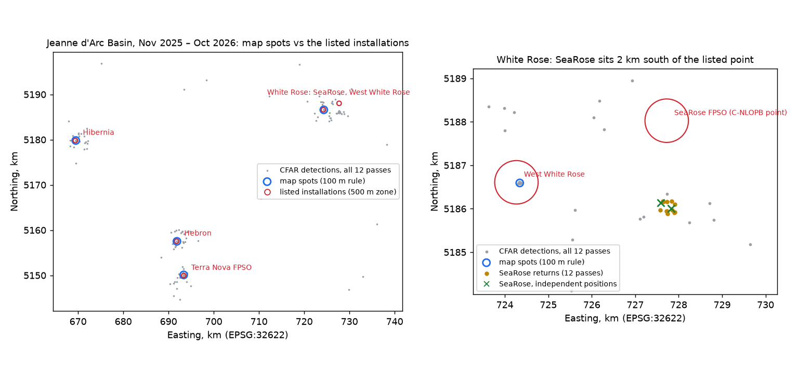
Why SeaRose was missed (looked at afterwards). It is there: a 238 m return appears on 12 of 12 passes, 61 m from Wikipedia's position for the field and 209 m from the World Ports Directory's, but 1,999 m from the regulator's point, which agrees on longitude and differs by about 1′05″ of latitude. It also weathervanes on its turret: its return moves up to 382 m between passes, more than the map's 100 m recurrence radius. Rebuilt with a 300 m radius (about one hull length), the map puts a spot 40 m from SeaRose and adds no false spot, but that radius was chosen after seeing this data, so it is the design for the next test, not a result. Two lessons: size the recurrence radius to the largest swing (a moored FPSO), and treat a published position as something to check.
How firm are these results?
The intervals above resample passes within each area and hold the areas fixed, so they describe those areas, not the next region. Resampling the areas as well (then passes within each drawn area) gives the interval for a new set of areas like these. With five areas it is coarse, and it is the honest one. Both are shown for the corrected numbers (post hoc; the pre-registered readings stand).
| Result | Value | 95%, areas fixed | 95%, areas resampled |
|---|---|---|---|
| Structure map: Pd gain at 5 false alarms per 1,000 km² | +0.046 | +0.027 to +0.094 | +0.006 to +0.120 |
| Structure map: false-alarm cut at production's threshold | 34% | 30% to 39% | 15% to 48% |
| Structure map: AIS vessels at a mapped spot | 0 of 217 | at most 1.4% (exact bound for zero events, counting each vessel once) | |
| Fixed threshold: false alarms per 1,000 km² (budget 10) | 20.6 | 19.0 to 22.2 | 6.7 to 39.4 |
The map's gain survives treating the areas as a sample, with little margin. The budget result does not: one area decides it (without Mobile Bay the pooled rate is 10.1), so it says a fixed threshold fails where there are many structures, not that it fails everywhere.
A vessel hiding next to a structure
The map takes returns at known structures off the dark list, and production leaves returns within 150 m of a listed platform out. Both would hide a dark vessel moored alongside. Two things were checked on areas already used (development, not a test).
Map spots where vessels sit. In Mobile Bay, which was not one of the structure-map test areas, 7 of 37 AIS ships on the July–December passes lay within 150 m of a spot: some recurring returns are moorings and waiting berths, not structures. The fix is simple: a spot that had an AIS ship beside it on any map pass is not masked.
| Area | Map spots | Had an AIS ship beside them | AIS ships at a spot, July–December | Dark-list cut |
|---|---|---|---|---|
| Gulf platforms | 1 | 0 | 0 → 0 of 50 | 11% → 11% |
| Mobile Bay | 25 | 9 | 7 → 2 of 37 | 80% → 54% |
| Sabine Pass | 4 | 1 | 0 → 0 of 57 | 44% → 42% |
| Wilmington | 10 | 1 | 0 → 0 of 17 | 54% → 44% |
| Honolulu | 3 | 0 | 0 → 0 of 30 | 23% → 23% |
Flag the structure instead of hiding it. Each structure gets a signature from the January–June passes: how many separate returns it shows and how big the largest is. On a later pass it is flagged when it shows an extra return, or one more than GROW times the biggest seen, and its returns go back on the dark list. It was scored by adding real ship returns (from AIS-matched detections elsewhere) 60, 100, 140 m from 534 structure-passes, 1,537 times.
| GROW | Added false alarms per 1,000 km² | Injected vessels flagged |
|---|---|---|
| 1.25× | 1.34 | 66% |
| 1.5× | 0.94 | 60% |
| 2.0× | 0.59 | 55% |
| 3.0× | 0.40 | 48% |
| extra return only | 0.20 | 6% |
GROW = 1.5 was chosen by a rule fixed in advance (the most sensitive setting adding at most 1 false alarm per 1,000 km²): it flags 60% of injected vessels (31% of small returns, 66% of medium, 84% of large) for 0.94 added false alarms per 1,000 km². Of the 4 AIS ships that actually sat within 150 m of a structure, each scored as if it alone were dark, 2 were flagged. An independent code review (Codex, three passes) found twelve problems in this scorer before the fourth test was frozen; fixing them lowered recovery from 73% to 60%.
Fourth pre-registered test: structure-rich new water
Rules, areas and pass list fixed 5 Nov 2026, 00:21 UTC (4 Nov, 20:51 NST) and pushed to GitHub (commit 82f9dbb, private repository) before any of the radar or AIS data was fetched. Scored once, 5 Nov 2026, 01:51 UTC (4 Nov, 22:21 NST) (commit e0a83ab).
Five new areas chosen for their structures: four off Louisiana with 56 standing federal platforms, and the Santa Barbara Channel, whose platforms are not on the federal Gulf list the pipeline uses, so the map has to find them itself. The map drops spots where an AIS ship sat; the alongside flag runs at GROW = 1.5, both fixed beforehand. 30 July–December passes, 129 AIS ships, 12,306 km².
| Area | Federal platforms | Map spots | False alarms per 1,000 km², without map | with map |
|---|---|---|---|---|
| Eugene Island (LA) | 12 | 0 | 4.0 | 4.0 |
| Main Pass (LA) | 26 | 27 | 93.2 | 22.9 |
| Santa Barbara Channel | 0 | 6 | 17.7 | 5.8 |
| Southwest Pass, Mississippi River | 10 | 6 | 20.4 | 6.4 |
| West Cameron (LA) | 8 | 2 | 10.5 | 8.4 |
- Map: improvement. Pd at 5 false alarms per 1,000 km² 0.50 → 0.93 (+0.426; 95% +0.019 to +0.720, areas resampled); false alarms cut 65% (35% to 75%); 2 of 115 AIS vessels sat at a mapped spot (1.6% of ship-passes). Keeping the occupied spots would have cut 69% and exposed 7 of 129 ships (dropped: 65%, 2).
- Alongside flag: does not transfer. 66% of 1,547 injected vessels flagged (95% 54% to 70%), for 1.87 added false alarms per 1,000 km² (23 false flags in 555 structure-passes; bar: at least 50%, lower end 40%, at most 1.0). AIS ships beside a structure, each scored as if dark: 5 of 14 flagged. Looked at afterwards: 16 of the 23 false flags came from Main Pass's platform field; without it the added rate would be 0.67. The reading stands as scored, and the flag needs a stricter rule where platforms are dense.
Quality-control images
Cross-polarised backscatter with land dimmed. Rings: matched to AIS, no AIS match (dark candidate), at a BOEM platform. These are the same status colours as the Harbour Twin viewer.
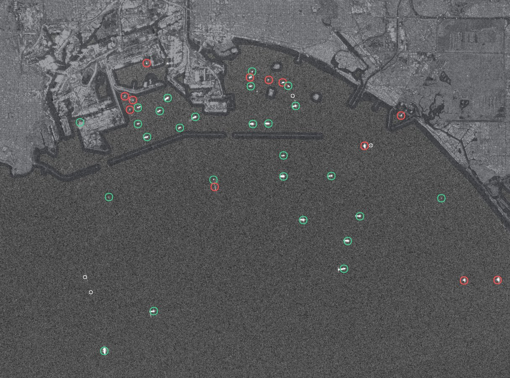
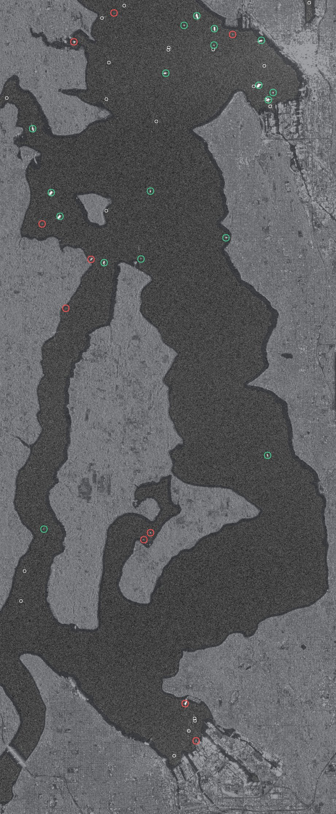
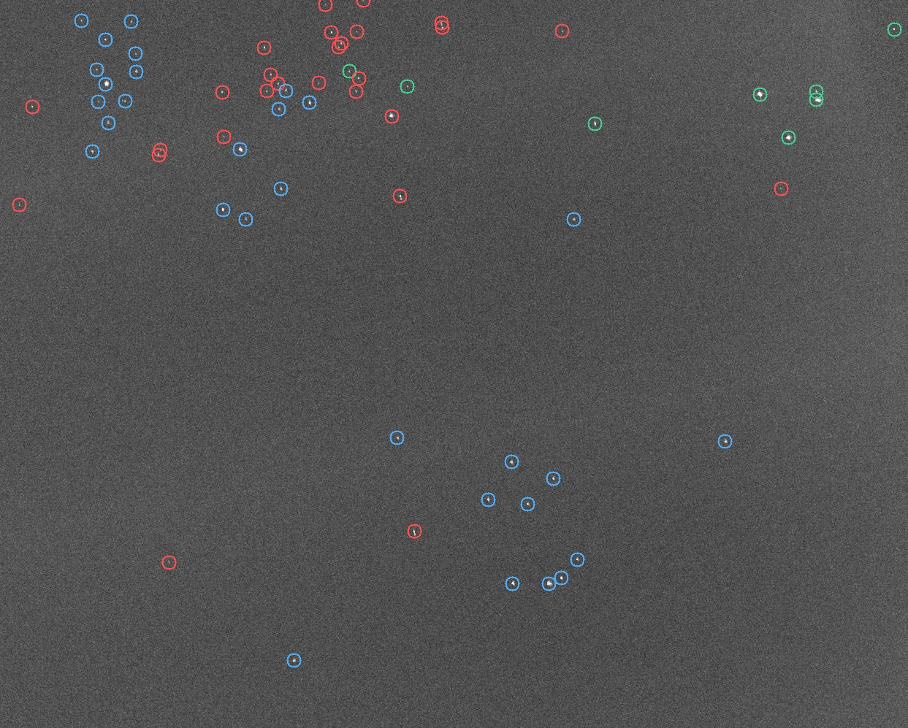
The Gulf has 25 AIS ships over four passes, too few to draw conclusions about Pd there. Its unmatched targets cluster in the platform fields. Some are likely supply vessels alongside platforms, or structures more than 150 m from their listed position. They have not been reviewed.
Characterisation
Each target's length and orientation come from the second moments of its pixels. Against AIS, for the 182 matched ships that report a length, the radar length has a median bias of 9 m (sidelobes make ships look longer), a median absolute error of 16 m and a correlation of 0.84. The long axis is within 20° of the AIS heading for 77% of ships, with a median error of 4°.
| Area | Matched ships with length | Length bias (m) | Median abs. length error (m) | Relative | Correlation | Ships with heading | Median axis error | Within 20° |
|---|---|---|---|---|---|---|---|---|
| All areas | 182 | 9 | 16 | 11% | 0.84 | 175 | 4° | 77% |
| Puget Sound | 66 | 13 | 15 | 13% | 0.83 | 61 | 5° | 70% |
| LA–Long Beach | 92 | -0 | 16 | 9% | 0.87 | 90 | 3° | 88% |
| Gulf of Mexico | 24 | 27 | 29 | 83% | 0.66 | 24 | 17° | 54% |
Icebergs. For St. John's, an iceberg-versus-ship score combines the cross- to co-polarised ratio, compactness and size. It is not validated: no official iceberg sightings with clear terms overlap these scenes. On the 20 October 2026 St. John's pass it rates 8 of 12 targets ship-like and 0 iceberg-like, which is plausible in October but is not a test.
Platforms. 120 Gulf detections at k = 5 fall within 150 m of a platform standing on the scene date (BOEM). Without that list they would have counted as dark vessels.
Second study: Danish waters at scale
A larger study, built the same month, uses the Danish Maritime Authority's complete AIS feed: 72 Sentinel-1 frames over the Danish straits, 62 over the Danish North Sea, and 94 frames from May 2026 held out until every setting was frozen. Intervals are 95% bootstraps that resample whole Sentinel-1 passes.
Matching that follows the radar physics
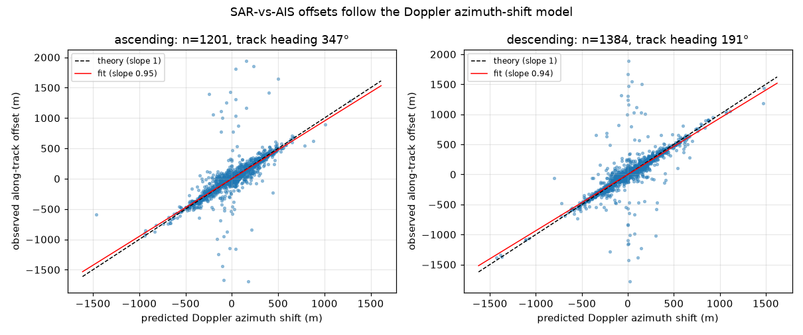
Correcting for the shift cuts the median SAR–AIS offset from about 207 m to 65 m on ascending passes and from 200 m to 60 m on descending ones. The match gate in the US validation above uses the same geometry.
Bright fixed structures next to a ship can steal its AIS match. In an injection test with known truth, a cost penalty for detections at mapped structures and recurring sites cut stolen matches from 20% to 3%, with no loss of recall.
Detect on cross-polarisation
Across 70 autumn frames, detecting on VH instead of VV halves the unmatched list, from 27.1 to 13.6 per 1,000 km² (difference -13.5, interval -20.9 to -7.0), at similar recall (80.4% against 79.8%), counted before any static-structure filter. On the windiest winter passes (median wind 10 m/s) the gap is larger: 13.5 against 63.4. Sea clutter is far weaker in cross-pol than ship returns.
Three regions and seasons
| Region | Frames | Open water km² | AIS vessels | Recall, all | Under 15 m | 30–60 m | Over 60 m | Unmatched per 1,000 km², raw |
|---|---|---|---|---|---|---|---|---|
| Danish straits, Sep–Oct 2026 | 72 | 355k | 3,646 | 81% [76%, 84%] | 47% [38%, 56%] | 89% [84%, 93%] | 89% [84%, 92%] | 13.6 |
| Danish North Sea, Sep–Oct 2026 | 62 | 297k | 838 | 92% [88%, 94%] | 59% [41%, 74%] | 98% [95%, 100%] | 94% [89%, 97%] | 36.0 |
| Danish straits, May 2026 (held out) | 94 | 402k | 4,412 | 72% [68%, 75%] | 40% [36%, 44%] | 86% [81%, 90%] | 86% [82%, 90%] | 22.6 |
The CFAR detector and every threshold were frozen before May was processed. May recall is lower mainly because the leisure season doubles the number of small vessels carrying AIS. The North Sea's denser unmatched list comes from sidelobes around the Horns Rev wind turbines and from the Wadden Sea tidal flats. A persistence filter removes recurring sites. The operational contact layer, which links unmatched detections across passes and ranks them, raises about 21 alerts per acquisition day in the straits (1.6 per 1,000 km² per day).
Geospatial foundation models: vessel type and length from radar chips
2,739 Sentinel-1 chips of AIS-matched vessels, labelled by AIS as cargo, tanker, passenger, fishing, service or small craft. Five-fold cross-validation grouped by vessel (MMSI), so no ship appears in both training and test.
| Model | Vessel type, macro-F1 (6 classes) | Length error (MAE) |
|---|---|---|
| ResNet-50, Sentinel-1 SoftCon (SSL4EO-S12), fine-tuned | 0.52 ± 0.04 | 21 m |
| ResNet-50, Sentinel-1 MoCo (SSL4EO-S12), fine-tuned | 0.49 ± 0.04 | 19 m |
| ResNet-50, ImageNet, fine-tuned | 0.48 ± 0.03 | 21 m |
| ViT-S/16, Sentinel-1 MAE (SSL4EO-S12), fine-tuned | 0.43 ± 0.04 | 22 m |
| ResNet-50, ImageNet, frozen | 0.40 ± 0.01 | 24 m |
| Gradient boosting on hand-crafted chip features | 0.38 ± 0.03 | 22 m |
| ResNet-50, Sentinel-1 SoftCon, frozen | 0.31 ± 0.03 | 27 m |
| CFAR blob length / majority class | 0.09 | 44 m |
Fine-tuned, the Sentinel-1 ResNet backbones lead, narrowly: SoftCon's margin over ImageNet is within one standard deviation across folds. Every learned model estimates length better than the CFAR blob (19–27 m against 44 m). Frozen, the same Sentinel-1 features are the weakest, below frozen ImageNet. Their pretraining corpus is mostly land, so here their value is as an initialisation, not as off-the-shelf embeddings. On thermal-noise-subtracted VH chips, which match how that corpus was processed, fine-tuned SoftCon reaches 0.55 ± 0.05.
Learned ship detectors from that study are not reported here. They will be retrained from AIS-labelled Sentinel-1 only (next steps).
Analyst console
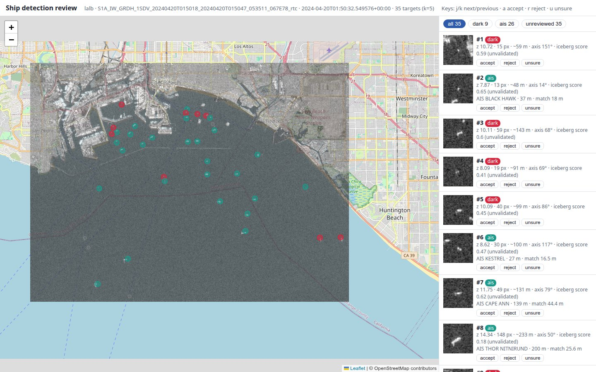
Live operation
The same code runs as a service for Vancouver and St. John's harbours. Timers record AIS around each pass, and a processor checks every 6 hours for newly published scenes. For each pass it writes products, alerts and a run-log line with the time from sensing to report. Upcoming passes:
- Vancouver harbour: Sat 24 Oct 23:32 NDT (02:02 UTC), Sentinel-1C, relative orbit 137
- St. John's harbour: Mon 26 Oct 07:11 NDT (09:41 UTC), Sentinel-1C, relative orbit 156
- St. John's harbour: Tue 27 Oct 07:03 NDT (09:33 UTC), Sentinel-1D, relative orbit 83
- St. John's harbour: Wed 28 Oct 18:51 NDT (21:21 UTC), Sentinel-1D, relative orbit 105
Latency today is dominated by the data source. Planetary Computer publishes terrain-corrected Sentinel-1 hours to days after sensing. For near-real-time use the same pipeline would read Copernicus NRT products or a commercial feed, where detection itself takes seconds (about 5 s for a 300 km² harbour; the 52 s above includes reading the scene).
How a change reaches the live service
Every validation run is tracked in MLflow with the detector settings, the operating metrics, the results files and the git commit. Each detector configuration is registered as a version of one model, loadable and runnable from the registry. A version becomes production only through a gate: Pd at 5 FA may not drop by more than 0.02, false alarms may not rise by more than 10%, at least 95% of the ships must still be scored (a wider mask must not buy Pd by testing less), and Pd by chance must stay under 0.06. Promotion writes the production settings to a file the live service reads, and every processed pass records the version that produced it. The decisions so far, replayed through the gate:
| Version | Detector | Coastal buffer | Pd at 5 FA | FA at operating point | Ships scored | Pd by chance | Decision | Gate |
|---|---|---|---|---|---|---|---|---|
| 1 | CFAR | 40 m | 0.54 | 48.7 | 272 | 0.08 | superseded | first production version |
| 2 | CFAR | 150 m | 0.63 | 13.1 | 226 | 0.04 | production | scores 83% of the ships (rule: at least 95%); approved anyway: the ships no longer scored lie within 150 m of the coast, where most unmatched targets at 40 m were docks and shore returns |
| 3 | CFAR | 75 m | 0.64 | 20.1 | 244 | 0.04 | rejected | false alarms +53% (rule: at most +10%) |
| 4 | CFAR | 300 m | 0.66 | 10.6 | 201 | 0.03 | rejected | scores 89% of the ships (rule: at least 95%) |
| 5 | learned | 150 m | 0.65 | 16.0 | 226 | 0.04 | rejected | false alarms +22% (rule: at most +10%); the live service cannot run this detector type yet |
| 6 | learned | 150 m | 0.71 | 8.1 | 226 | 0.03 | failed fresh test | passes every rule, including equal recall; the live service cannot run this detector type yet; pre-registered fresh test: worse than CFAR at equal recall |
Unit tests, including the gate and a registry round trip, run in CI on every change (Python 3.11 and 3.12). The full validation needs the Sentinel-1 cases and runs locally before a candidate is registered. The learned detectors are versioned in the same registry and judged by the same gate, which since 4 Nov also compares a learned candidate with CFAR re-thresholded to the same recall; promoting one also needs the live service to run it.
Limits
- AIS is incomplete truth. Vessels without AIS make some "false alarms" real ships, and AIS position errors and fix gaps can break a true match.
- Small craft. At 10 m pixels, boats under 25 m are often missed. That is a sensor limit as much as a detector one.
- Near the coast. Ships within 150 m of the mapped coast (berths, marinas) are outside the scored area.
- Sample size. 12 test passes (226 ships) and 36 locked passes give useful but wide uncertainty, especially in the Gulf (25 ships). All are US waters in 2024, in VV+VH; HH/HV over sea ice is untested.
- Baseline detector. Detection numbers are for CFAR. No learned ship detector is claimed yet; the learned models shown are vessel type and length classifiers.
Next steps
Done so far (phase 1): operator KPIs with intervals, a locked test set, a position ellipse on every detection, and breakdowns by sea state and incidence angle. Planned:
Phase 2, operational capability. AIS mismatch flags (an AIS position with no radar return while an unexplained target sits within plausible range); heading from the wake to resolve the 180° ambiguity; length and vessel type for unmatched targets; linking unmatched contacts across passes; wind-adaptive thresholds.
Phase 3, deployability. Near-real-time Sentinel-1 with calibration in the pipeline, aiming at under an hour from sensing to alert; standard track and overlay formats alongside GeoJSON and KML; an offline container with a software bill of materials, signed images and an audit log; RADARSAT Constellation Mission ingestion, subject to access terms.
Further detector work:
- Learned detector, round two. More AIS-labelled passes, analyst decisions from the console as cleaner labels, and a full-image detector so recall is not capped by the CFAR candidates. No China-origin datasets or models are used.
- Discrimination. Platforms and fixed structures, azimuth ambiguities and sidelobes; iceberg-versus-ship with labelled icebergs.
- Faster data. Near-real-time Sentinel-1 for the live harbours, with latency reported from sensing to alert.
Related work
The harbour side of this work is Harbour Twin, a 3D digital twin of Vancouver and St. John's harbours built from public data (source). It has the first version of this ship detector, and each pass here can also be written in its viewer's format.
Data and licences
- Contains modified Copernicus Sentinel data (2024, 2026), terrain-corrected Sentinel-1 (RTC) via Microsoft Planetary Computer.
- AIS 2024: Martin, Brass, Dornback and Fontenault (2025), Nationwide Automatic Identification System 2024, NOAA Office for Coastal Management (MarineCadastre), CC0 1.0. Live AIS: aisstream.io.
- Water, piers and bridges: Overture Maps Foundation (includes OpenStreetMap data, ODbL).
- Danish study: AIS from the Danish Maritime Authority; structures from OpenStreetMap (ODbL); winter wind from ERA5 via Open-Meteo (CC BY 4.0); Sentinel-1 backbones from SSL4EO-S12 via TorchGeo.
- Offshore platforms: BOEM Platform Structures (data.boem.gov), U.S. Government data.
- Protected areas for alerts: Canadian Protected and Conserved Areas Database (ECCC). Contains information licensed under the Open Government Licence – Canada.